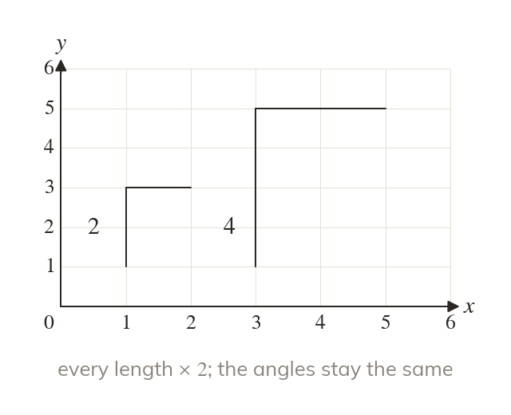
Every length times k
An enlargement multiplies every length by the scale factor k. The angles stay the same: the image is similar, not congruent.
A projector, a photo print and a map all enlarge: every length is multiplied by the same number. The centre fixes where the enlarged image lands.
Work down the page at your own pace. Write every answer in your book first, then click to check it.
Read each card, then follow the worked examples one step at a time.

An enlargement multiplies every length by the scale factor k. The angles stay the same: the image is similar, not congruent.
Each image point is on the line from the centre through its object point. It is k times as far from the centre.
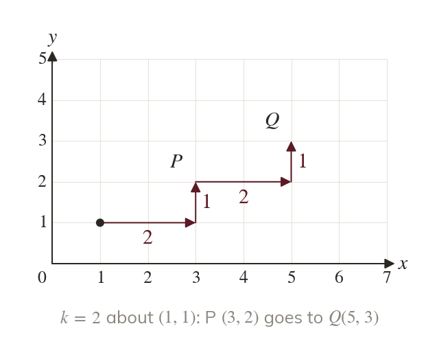
Count the steps from the centre to a point, then multiply them by k. Multiply the coordinates only when the centre is
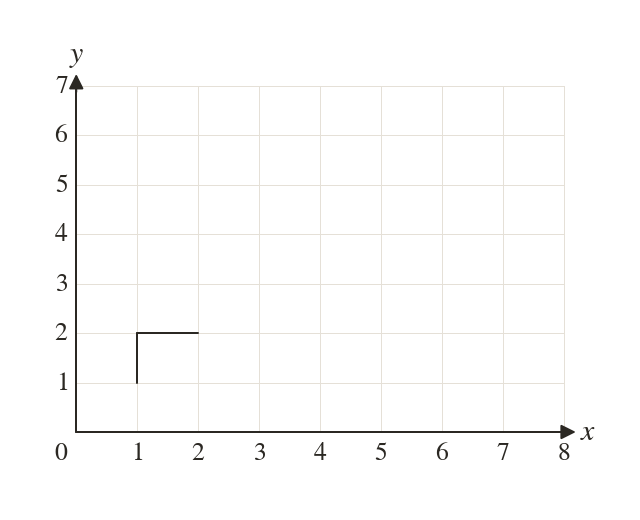
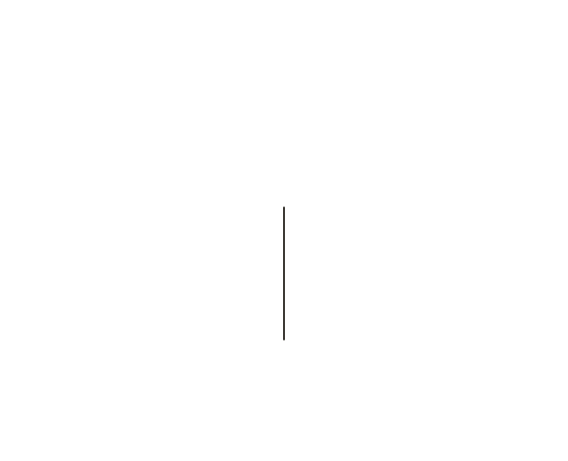
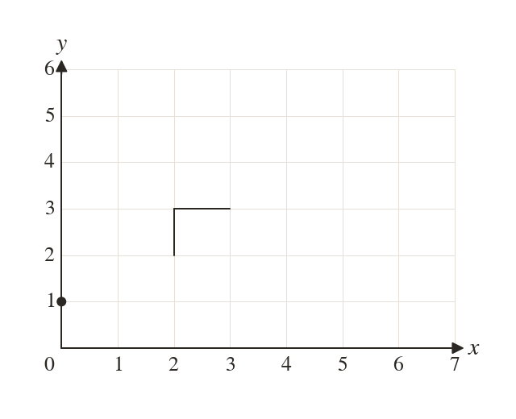
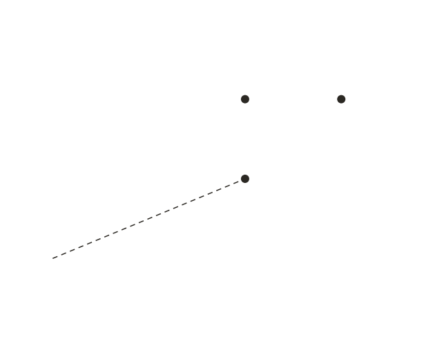
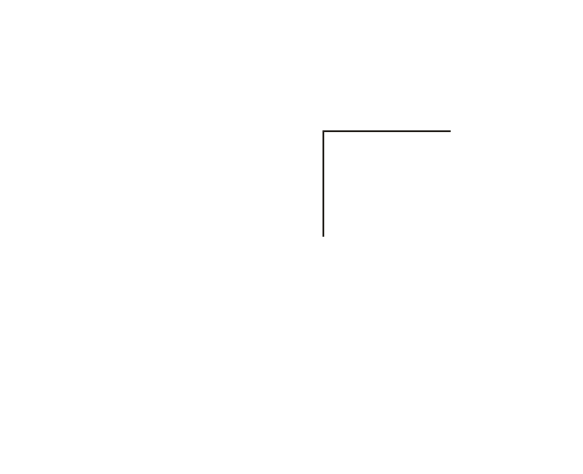
Pick an answer. If it's wrong, the feedback tells you which mistake it was.
Printable worksheet — the questions with room to work.


Read each card, then follow the worked examples one step at a time.
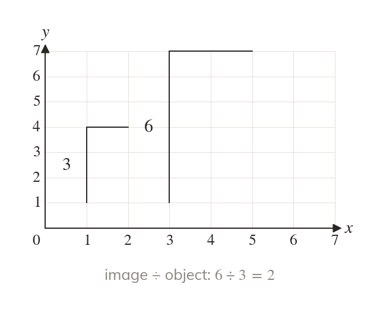
The scale factor is an image length divided by its matching object length. Divide image by object, never subtract.
A line through each point and its image passes through the centre. Two such lines cross there.
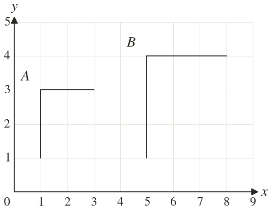
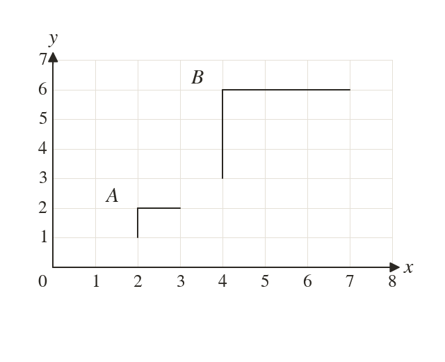
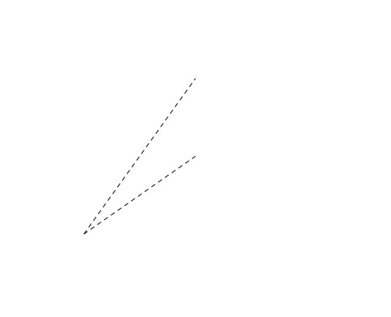
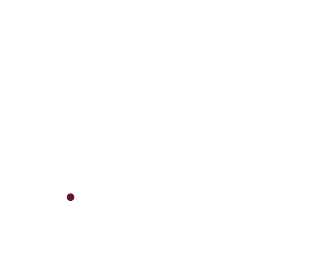
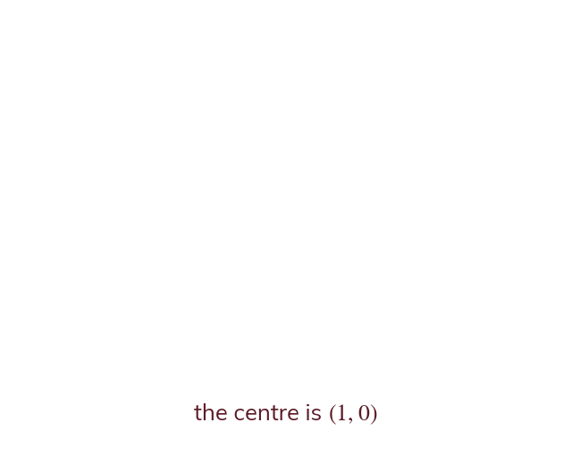
Pick an answer. If it's wrong, the feedback tells you which mistake it was.
Printable worksheet — the questions with room to work.
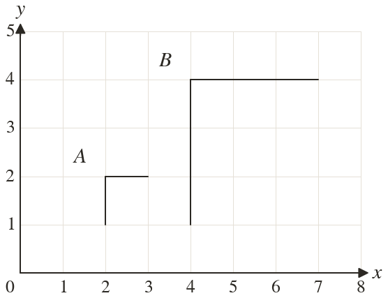
Finished? Next lesson: 10H.12.4 Fractional and Negative Scale Factors.
Log in, then search for a code to practise that skill.
Videos, worksheets and more on each part of this lesson.